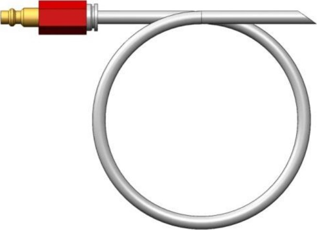
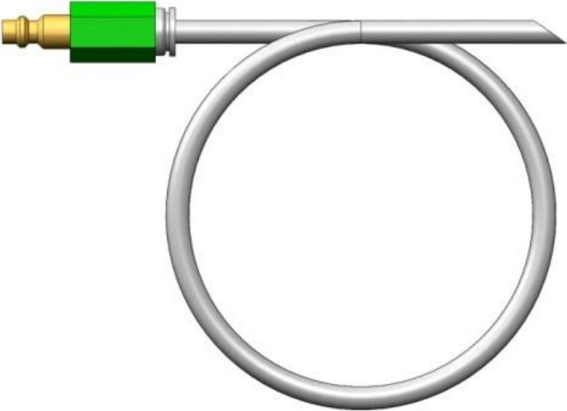
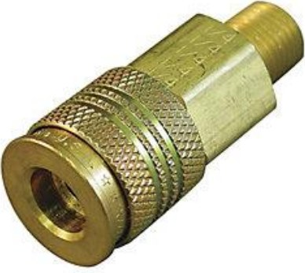
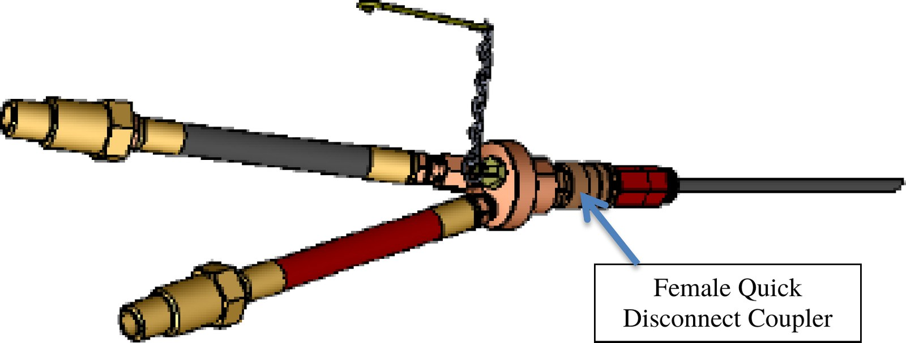
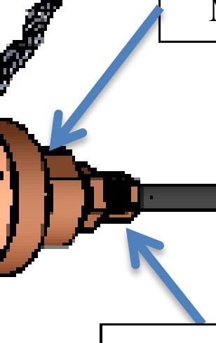

Doc no. MOC-TSB-13-02 // Vol. 13 No. 02 // Feb 18, 2013 // Transmission
Dipstick Adapter Upgrade Kit
MOC has created an upgrade kit for the Dipstick Service Adapter (Part No. 94777). The Kit (Part No. 94845), which includes 2 new dipstick service hoses in 1/4" and 5/16" that are connected by a quick disconnect fitting, and the Female Quick Disconnect Coupler to add to the existing Dipstick Service Adapter as shown in the pictures below, is now available for purchase.
What's new
- Remove the brass fitting from the 3-Way manifold.
- Apply Teflon tape to the Female Quick Disconnect Coupler (Part No. 94561) and connect it to the 3-Way manifold in the same location you removed the original brass fitting.
- The adapter is now ready to be used. When performing a service, select the Dipstick Service Hose you want to use, 94839 or 94841, and connect it to the Female Coupler.
NOTE: You will also need to request a Software update for the Smart Tech™ ATF Machine from the Machine and Equipment Department.
TO UPDATE YOUR EXISTING DIPSTICK SERVICE ADAPTER:
Contact
For more information, contact the Machine & Equipment Department at 866.244.6621.





Part numbers
| Part No. | Description | Notes |
|---|---|---|
| 94845 | (94839) (94841) (94561) Kit, Dipstick Adapter Upgrade | |
| 94777 | Dipstick Service Adapter | |
| 94561 | Female Quick Disconnect Coupler |